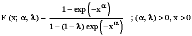
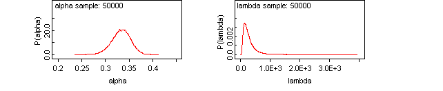
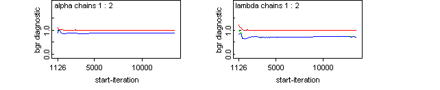

![[ext_weibull_ex0]](ext_weibull_ex0.bmp) Extended Weibull Model
Extended Weibull Model (Marshall-Olkin)

model
{
for(i in 1 : N)
{
x[i] ~ dext.weib(alpha, lambda)
}
for (i in 1 : Ncen)
{
x.cen[i] ~ dext.weib(alpha, lambda)C(t.cen, )
}
# Prior distributions of the model parameters
alpha ~ dunif(0, 5.0)
lambda~ dgamma(0.001, 0.001)
}
The data set gives 100 observations on breaking stress of carbon fibres, Nichols and Padgett(2006).
Marshall, A. W. and Olkin, I. (1997). A new method for adding a parameter to a family of distributions with application to the exponential and Weibull families. Biometrika , 84(3) , 641-652.
Nichols, M.D. and W.J. Padgett, W.J. (2006). A bootstrap control chart for Weibull percentiles, Quality and Reliability Engineering International , 22, 141-151.
Data ( click to open )
Inits for chain 1
Inits for chain 2 ( click to open )
Results
mean sd MC_error val2.5pc median val97.5pc start sample
alpha 0.2934 0.02427 3.197E-4 0.2433 0.2942 0.3384 1001 50000
lambda 141.5 111.7 1.387 31.88 110.7 430.3 1001 50000
Dbar Dhat DIC pD
x 260.0 262.1 257.9 -2.096
x.cen 19.55 16.15 22.94 3.394
total 279.5 278.2 280.8 1.298


![[ext_weibull_ex4]](ext_weibull_ex4.bmp)